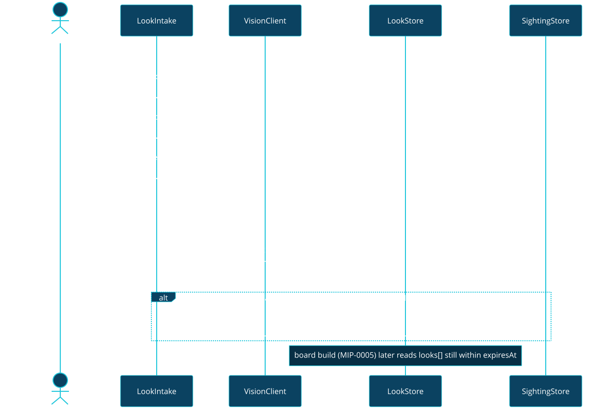

MIP-0006: "How does it look right now?" — a live look at each beach, fed by users' cameras¶
| Status | Draft |
| Author | Claude Fable 5.1, for M. Hoffmann; motivated by a surfer friend who pays for a camera app just to see the sea before going |
| Created | 2026-09-05 |
| Phase | 1 (bot photo handler, local vision) |
| Related | ARCHITECTURE.md §5e (VisionClient, --analyze-photo), §5d (SightingStore), MIP-0002 (the photo arrives through the bot), MIP-0005 (the map shows it) |
| Effort | XL — new model+store, a bot photo pipeline, face-detection/rejection, retention/deletion, abuse controls |
| Gain | user value (closes the "what does it look like now" gap) |
| Effort vs Gain | do when X lands — needs MIP-0002 first; the privacy/face-rejection work alone is substantial |
| Depends on | MIP-0002 (photos arrive via the bot), MIP-0005 (the map shows it); Phase 1 prerequisite missing |
| Risk | a single leaked or misclassified face on the public map ends user trust — the reject-not-blur v1 design exists for exactly this |
| Cost so far | ~$0.7 shared with MIP-0007 (same drafting commit 5abeecc, not split further) |
1. Summary¶
Forecasts say what the sea should be doing; a photo says what it is doing. Paid surf-cam apps exist because that gap is real. marola can close it without owning a single camera: users who are already at the beach send a photo (or a short clip) through the bot or the map; a vision model turns it into a structured, time-stamped observation (sea state, foam, crowd, jellyfish or man-o'-war visible, water colour), and the beach's card shows "latest look: 09:12, choppy, foam at the stream mouth", with the photo itself, for the next few hours. A local vision model does the work, with strict rules on faces, retention and abuse from day one.
2. Motivation¶
- The friend's two paid apps: one for forecasts, one for cameras. marola has the first; the second is the feature people pay for, and here it can be crowd-fed instead of camera-fed.
VisionClientand--analyze-photoalready exist "waiting for the bot";SightingStorealready records jellyfish/whale/pollution reports. A photo is the richest sighting there is, and the calibration loopARCHITECTURE.md§8 wants (real observations against the heuristics) needs it.- A map (MIP-0005) with a "now" layer on top of "tomorrow" is a different product from a forecast list.
3. User-visible change¶
User (bot): 📷 photo, optionally with a caption "campeche agora"
Bot: Valeu! Praia do Campeche, 09:12 — parece: mar mexido, espuma na foz do riozinho,
pouca gente, sem água-viva visível. Fica no mapa por 6 h. (apagar: /apagar-foto)
Map card: ▸ Latest look · 09:12 · [thumbnail] · "choppy, foam at the stream mouth, few people"
▸ 3 looks today · last 6 h
If the model sees something that reads as a hazard (man-o'-war, oil, sewage foam) the bot adds
the standard first-aid/lifeguard footer and files a Pollution/Jellyfish sighting too. No
photo is ever shown that contains a recognisable face (§5.4).
4. Data sources and dependencies reviewed¶
- User photos via Telegram (
getFile, JPEG, EXIF often stripped by Telegram; location must come from the chat's last shared location or a beach name, not from the image). Verified: the Bot API's photo flow is documented; not exercised yet (no bot, MIP-0002). - Vision, local:
LocalVisionClientwith a multimodal Ollama model (llava,moondream;llama3.2-visionis the family-consistent option). Status inARCHITECTURE.md§5e: request path verified, description not, because no vision model was pulled. Pulling one (ollama pull llama3.2-vision, ~7 GB) is the first task. - Public webcams (municipal, surf shops, Windguru-linked cams): would make the feature work before there are users, but every cam has its own terms; embedding or re-serving frames without permission is exactly the "reverse-engineered workaround" this repo avoids. Not in v1; §11 keeps it as a per-source question.
- Storage: photos and observations under
data/looks/locally (files + JSON-lines, like sightings). Thumbnails only on the map; originals expire.
5. Design¶
5.1 Model¶
final case class Look(
id: String, beachName: String, takenAt: Instant, source: LookSource, // User(chatHash) | Cam(id)
observation: Observation, photoRef: Option[String], expiresAt: Instant)
final case class Observation( // structured, from the vision model, validated
seaState: SeaState, // Calm | Choppy | Rough | Unknown
foam: Boolean, crowd: Crowd, // Empty | Few | Busy | Unknown
jellyfishVisible: Boolean, manOWarVisible: Boolean,
waterColour: WaterColour, // Blue | Green | Brown | Unknown
caption: String, confidence: Double)
VisionClient gains observe(imageBytes): Observation < Sync beside describe: the prompt asks
the local model for compact JSON with exactly these fields (same JSON-recovery approach as
Reviewer). Observation is what the card shows; caption is the model's sentence, labelled as
such.
5.2 Flow¶
bot photo → LookIntake: rate limit (3 photos/chat/hour) → size cap (5 MB) → face check (§5.4)
→ VisionClient.observe → Look stored with expiresAt = takenAt + 6h → reply → if
manOWarVisible || jellyfishVisible || (foam && waterColour == Brown) also SightingStore.record.
Map (MIP-0005): the board build includes looks[] per beach still within expiresAt.

5.3 Where it lives¶
core/looks/ (model, trait LookStore, LookIntake pure validation), local/looks/
(LocalFileLookStore). The vision prompt is a resource (observe_prompt.json) so it can become
DSPy-compiled once there are labelled photos.
5.4 Privacy, safety, abuse — the non-negotiables¶
- Faces. Before storing: a face-detection pass (local: a small ONNX detector or the vision model's own "people visible?" answer). A photo with a recognisable person is either blurred at the detected boxes or rejected with a polite reply. v1 rejects; blur is a follow-up.
- Retention. 6 h on the map, original deleted at 24 h, thumbnails with it;
/apagar-fotodeletes immediately. No chat id stored with the look, only a salted hash for rate-limiting. - Consent line in the bot's reply the first time: what is kept, for how long, how to delete.
- Abuse. Not-a-beach photos (vision says so) are acknowledged and dropped, never displayed; NSFW/violent content check via the same model; repeat offenders rate-limited to zero.
- Never a safety claim. The card says what the model saw, with its confidence; the water verdict and scores stay deterministic. "Looks calm" next to "IMPRÓPRIA" is exactly the point.
6. Scoring / safety impact¶
None to the score in v1 (a look is display + a sighting). Later: a fresh Rough observation can
add a note to the current hour ("reported rough at 09:12"), never change the water verdict.
7. Verification plan¶
- Unit:
LookIntakerules (rate, size, expiry, hazard → sighting) with fixtures;ObservationJSON recovery from messy model output (theReviewerpattern); board includes only unexpired looks. - Live, local: pull
llama3.2-vision, run--analyze-photoon ten beach photos (author's own), check the structured fields by eye; record three as fixtures for the offline spec. - Live, bot: send a photo from a phone; see the reply and the card;
/apagar-fotoremoves it. - Face rule: three photos with people → all rejected; three without → accepted.
8. Risks, limitations, and honest caveats¶
- Cold start. No users, no looks. The map shows "no look yet today" honestly; the author's own daily photo is the seed. Public cams would fix cold start and are excluded for terms reasons.
- Small-model vision is weak.
llava-class models misjudge sea state. Show confidence, keep the caption labelled as the model's, and treat this as a calibration dataset in the making. - Privacy is the product risk. A single face on the map is the end of trust; v1 rejects rather than blurs for that reason.
- Storage growth. Expiry bounds it; a cap of 50 looks/beach/day.
9. Alternatives considered¶
- Buy camera access / partner with a cam provider. Real cameras, real money, real contracts. Later, if the crowd-fed version proves demand.
- Scrape public cams. No.
- Photos only in the bot, not on the map. Halves the value; the map is where "now" belongs.
11. Open questions¶
- Reject or blur faces in v1? (Proposal: reject.)
- Which local vision model:
llama3.2-vision(family-consistent, 7 GB) ormoondream(small, fast, weaker)? Benchmark on the author's ten photos. - Short clips (Telegram video notes): first frame only, or three frames? (v1: first frame.)
- Public webcams: which, and under what terms? Per-cam email before any use.
- Should a look with
manOWarVisibletrigger a bot broadcast to subscribers of that beach (MIP-0004)? It is the first proactive message, so it needs a human-confirmation gate.